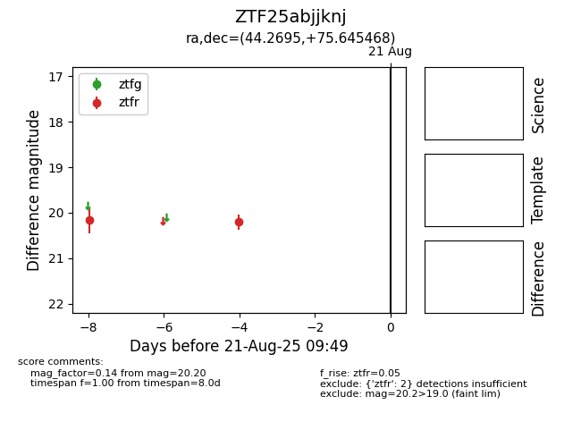

Target ZTF25abjjknj at 2025-08-21 09:49, see:
FINK: fink-portal.org/ZTF25abjjknj
Lasair: lasair-ztf.lsst.ac.uk/objects/ZTF25abjjknj
ALeRCE: alerce.online/object/ZTF25abjjknj
alt names
ZTF25abjjknj (ztf,alerce)
coordinates:
equatorial (ra, dec) = (44.2695,+75.64547)
galactic (l, b) = (130.6077,+14.68087)
photometry
last ztfr=20.20
2 ztfr detections
